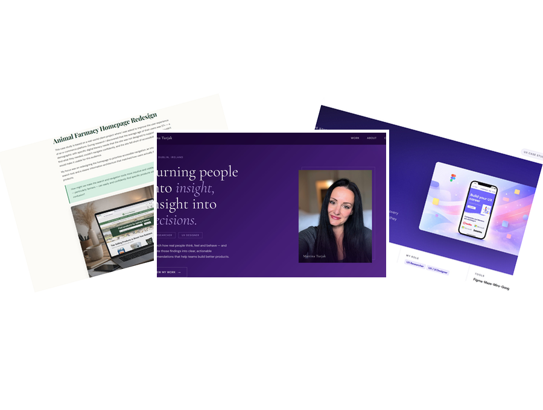

How I went from Notion to WordPress to GitHub — with zero coding experience, a lot of patience, and Claude by my side.

After finishing college, life got in the way, and I found myself in a long gap of not really doing anything with my UX work. Starting again felt overwhelming. So I asked my mentor — what's the easiest way to build a portfolio? She pointed me to Notion. Simple, straightforward, no code needed. So I started there.
But Notion had its limits. My Miro boards from college were blocked, sharing the portfolio felt clunky, and honestly — it just didn't look as professional as I wanted it to. A friend suggested WordPress. Another friend helped me set it up. I struggled, wanted to give up more than once, but eventually figured out the blocks and got something working. Still, I couldn't do what I actually wanted visually. The restrictions were frustrating.
Then a friend mentioned GitHub. And around that same time, I discovered Claude.
That's where everything changed.
There's no client, no brief, no stakeholder to present to. This is the story of how I — someone with zero coding experience — built a real, live portfolio website using Claude, GitHub, and VS Code.
It's about learning to prompt properly, figuring out what to upload and what not to, losing memory in chats and starting over, breaking things and fixing them — and eventually getting to a point where it all just clicked.
I actually understood it. Not all of it, not immediately — but more than I ever expected.
This wasn't a straight line. It was a series of decisions, frustrations, and breakthroughs — each platform teaching me something that the next one built on.
My mentor suggested it — simple, no code needed, and a great place to start. I worked in Notion for a long time building everything from scratch, with no AI to help. But problems kept piling up. Anyone who wanted to view my portfolio had to request permission — even though I had set it to visible for everyone. It never looked truly professional. And my Miro boards from college were completely inaccessible — the credentials were blocked by the college because the account was their property, leaving me as a viewer only, unable to access my own work as a creator. It was a frustrating dead end.
A friend suggested WordPress. I had no idea how it worked. I struggled with the block editor and the template restrictions. I wanted to give up more than once — but I pushed through and eventually got something working. Still, I couldn't do what I actually wanted visually.
Another friend introduced me to GitHub. And around the same time, I discovered Claude. This changed everything. I could finally build exactly what I had in mind — without needing to know how to code. Claude guided me through every step, and I slowly learned to give better and better prompts.
When some changes couldn't be made directly in GitHub, I had to go one level deeper — into VS Code and briefly into Python scripts to find and edit raw code. I had never done this before. It was the biggest challenge of the whole journey. But I figured it out.
The portfolio is now live on GitHub Pages, with two full case studies, a clean design, and a structure I built and understand myself. Something I'm genuinely proud of.
There was no structured research plan. No workshops. No bootcamp. I listened to a few podcasts on Spotify, watched maybe two YouTube videos, and then just started trying things. Everything else I learned by getting it wrong first.
That was the method — mistake, fix, move forward. Repeat.
Notion, WordPress with Uncode templates, GitHub Pages, Claude AI, VS Code, Python scripts, GitHub Codespaces, Squarespace DNS. Each tool taught me something the next one built on.
I started with general questions — just figuring out what it could do. Then I asked if we could try building a web page. Then I connected it to GitHub. Then it grew from there.
Front end. Back end. HTML. CSS. Git. What any of it meant. I was starting from zero — and I was okay with that, because I had to be.
That talking to AI like a person doesn't work the way you'd expect. It can't read between the lines. It doesn't know what you mean — only what you say. That took a while to accept.
The biggest shift wasn't learning the tools — it was learning how to communicate with the tool. Prompting is a skill. And like any skill, it takes time, failure and repetition to get right.
No interviews needed. No surveys. The person struggling with the product was me — and I had a very clear picture of what that felt like from the inside.
"Why is this not working?" "Did I break something?" "Maybe I should just start from scratch." "Is this even worth it?"
Frustrated. Sometimes furious. Occasionally raising my voice at a screen. But also — genuinely proud when something finally clicked. And oddly supported by an AI that would tell me to take a break.
"No. This is not what I want." "You messed everything up." "Let's go back two steps." And then — "Wait. That actually worked."
Upload too many files. Lose memory. Start over. Try a different prompt. Screenshot everything. Slowly figure out that less is more.
Martina
UX Designer · Non-developer · Working full time · Building a portfolio on the side
"If I say something differently, Claude doesn't know what I'm thinking at the back of my head. There's no psychological personality it's reading. I need to be very clear describing what I need."
The same frustration kept surfacing across every stage of the journey — not with the tools themselves, but with the communication gap between what I meant and what I said.
How might a non-developer with no coding experience build a professional, live portfolio website — using AI as the primary tool — without a course, a teacher, or a technical background?
This section will cover the actual building process — screenshots, code snippets, and the real moments of struggle and breakthrough.
This section will show the final portfolio, key learnings, and what I would do differently.